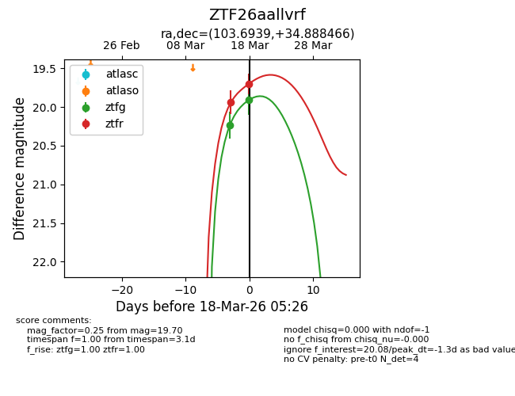
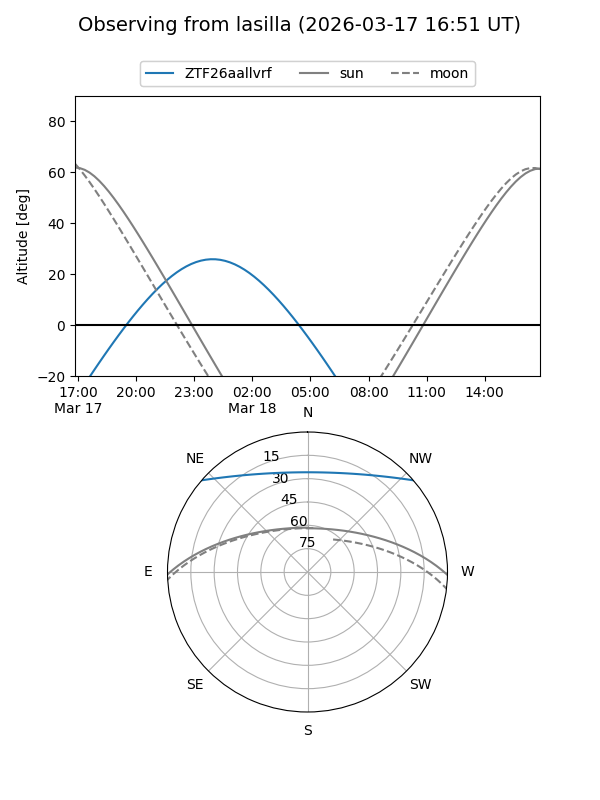
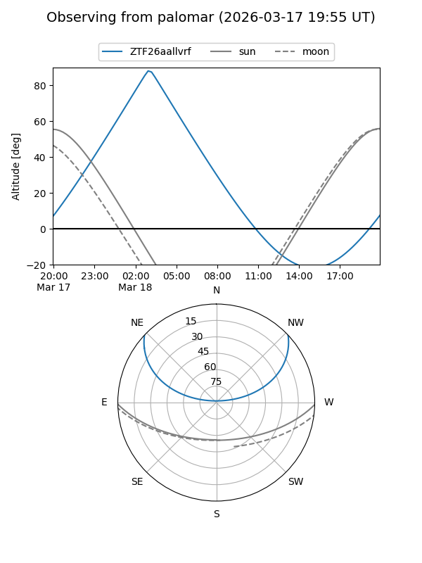
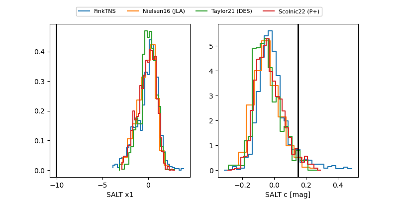

ZTF26aallvrf
Target ZTF26aallvrf at 2026-03-18 05:28
Aliases and brokers:
FINK: link
Lasair: link
ALeRCE: link
alt names
ZTF26aallvrf (ztf,fink_ztf)
Coordinates:
equatorial (ra, dec) = 103.6939,+34.88847
equatorial (HMS+DMS) = 06:54:46.53,+34:53:18.48
galactic (l, b) = (181.3811,+15.75028)
Flags:
Photometry:
last ztfg=19.91, ztfr=19.70
2 ztfg, 2 ztfr detections
Lightcurve

Visibility


Additional plots
